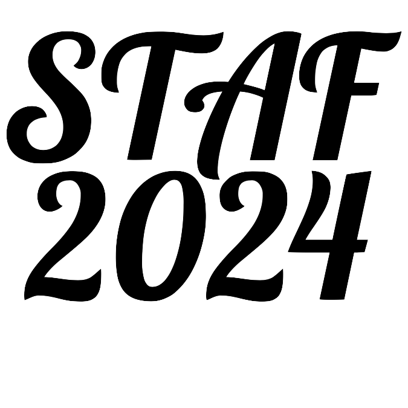
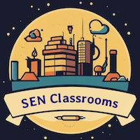
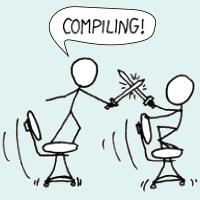
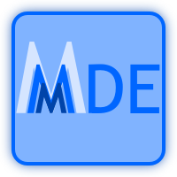

↸ BACK
return to the root

STAF 2024
a multi-conference event I am general-chairing in 2024

SEN Classroom
a national educational event
(2023–…)
MoDELS
one of the main conferences I frequently attend and serve (2012–…)
OOPSLE
a workshop about open and original problems in SLE (2013–2020)
SATToSE
SoTeSoLa
a regular software evolution event
(2008–…)
GTTSE
a summer school on grammar tackling trends
(2005–…)

RCL CoCoDo
bridging academic ‹Programming› with the industry (2017–2021)

MMMDE
a workshop about mathematical methods in MDE (2015)
info about international conferences in Russian (2012–2013)
PEM
a colloquium I used to organise (2012–2013)
The page is maintained by
Dr. Vadim Zaytsev
a.k.a. @
grammarware
. Dim tiles refer to events to which I am currently not actively contributing. See
copyright disclaimer
.
Last updated: May 2024.